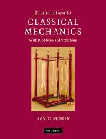

Note: This page will undergo continual expansion as I am exposed to more and more resources.
HyperPhysics is an excellent quick-reference. It has a wide range of no-nonsense articles as well as helpful graphics and input-output calculators (which are admittedly not as pretty as the ones here ☺).
Physics Stack Exchange is a streamlined forum whose users are exceptionally dedicated and knowledgeable. Even though you might not understand three-fourths of the threads there, consider utilizing Stack Exchange if you have a question that requires deeper insight or specialized knowledge.
Physics Forums is another forum. My impression is that its users are much more receptive to homework-help threads than Stack Exchangers are.
I've only seen a few, but here are some impressions:

Young and Freedman's University Physics is comprehensive but also inundated with distracting, "user-friendly" graphics and rather dry explanations in small print. The numerous exercises help one become comfortable with applying the basic formulas, but are mostly straightforward and uncreative. It's a good complement to the classroom but probably impossible to self-study with.

Kleppner and Kolenkow's An Introduction to Mechanics is lovely: the layout is minimalist, the explanations are clear and concise, almost all ideas introduced are built from the ground up, and, best of all, the exercises are well designed. Even if you have taken AP Physics C, you will likely find K&K challenging.
Morin's Introduction to Classical Mechanics is written in a more casual voice than K&K, but its problems are even more difficult. Most are probably impossible for the average AP Physics C student; I've heard several complain that some problems require a particular "trick" that isn't very useful for other problems. Nonetheless, they're a good mental workout.
The Feynman Lectures are a great read (Feynman videos are wonderful as well). You can feel Feynman's enthusiasm through the pages, though it must be noted that the Lectures are better for learning concepts intuitively than for specific problem-solving practice. There is, however, a set of fun exercises on the Feynman website.
My goal is to keep this site as minimalist as possible without sacrificing useful colors and graphics. On each subpage, the menu bar is fixed to the top of the screen. In it, you will find:
Click to return to the Wondergrad home page. |
Click to return to the Physics Fun home page. |
These discussions utilize elementary calculus. |
Equations can be intimidating, so I have tried to use color to alleviate some of the distress they might cause. The "solutions" to important equations are set in light green:
For aesthetic reasons, I often notate time-dependent functions without explicitly notating their dependence on \(t\); thus, \(f\) and \(f_0\) are equivalent to \(f(t)\) and \(f(0)\), respectively, and \(t_0 = 0\) unless otherwise specified. Similarly, given a function \(f(x)\), \(\frac{df}{dx}\) is equivalent to \(\frac{df(x)}{dx}\).
I've also written many input-output calculators so that you can experiment with the nasty equations without having to type them into a handheld calculator. As you can see, they are quite Matrix-y:
In each article, supplementary notes are indicated by superscripted numbers, like this[1]. Scroll to the bottom of the page to read them.
Physics Fun is targeted primarily towards curious high-schoolers and college underclassmen. Its purpose is not to showcase amazing new insights into physics pedagogy or tricky puzzle problems that require great wit and creativity to solve.
Some of you may notice that a good deal of Physics Fun is methodically paced, with ample steps shown and explanations given. This is because I think it is very important for learners to grasp even the most basic concepts logically and hopefully intuitively; from my experiences, it seems that many high-school physics classes are taught at a pace that prevents intuition from forming immediately.
In fact, re-learning concepts I had been subconsciously confused about has been one of the most rewarding parts of building Wondergrad. Hopefully this site will benefit you in a similar way.
1 Notes typically contain additional explanations, often of greater depth, that might oversaturate the main text if included. They are not necessarily critical to the average student, but they might help you develop a better understanding of the concepts.